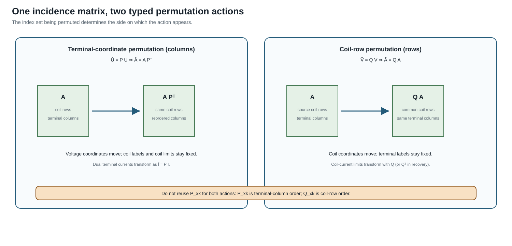

Transformer-winding coordinate normalization
Page status: guarded exact winding-coordinate normalization with executable round trips; compact serialization closure remains open.
A winding is a port of a multiwinding device, not an independent two-terminal transformer. Its terminal coordinates may nevertheless need normalization before factor assembly, comparison, or compilation. This chapter applies the same typed coordinate action used for lines while retaining transformer and winding identity.
Winding factor
Let transformer $x$ have winding $k$ at bus $i$. Its ordered terminal voltage vector is $\mathbf U_{xki}$. A connection-incidence matrix $\mathbf A_{xk}$ maps terminal voltages to stable coil coordinates:
\[\mathbf V_{xk}^{\mathrm{coil}} =\mathbf A_{xk}\mathbf U_{xki}.\]
For a grounded-wye winding, each row of $\mathbf A_{xk}$ subtracts the neutral voltage from one phase voltage. For a delta winding, each row takes a declared line-to-line difference. The row order identifies the coils and is distinct from the terminal-coordinate order.
Terminal-coordinate action

Let
\[\widehat{\mathbf U}_{xki} =\mathbf P_{xk}\mathbf U_{xki}\]
for a permutation $\mathbf P_{xk}$. Coil coordinates are retained, so the normalized incidence matrix must be
\[\widehat{\mathbf A}_{xk} =\mathbf A_{xk}\mathbf P_{xk}^{\mathsf T}.\]
Then
\[\widehat{\mathbf A}_{xk}\widehat{\mathbf U}_{xki} =\mathbf A_{xk}\mathbf P_{xk}^{\mathsf T} \mathbf P_{xk}\mathbf U_{xki} =\mathbf A_{xk}\mathbf U_{xki}.\]
The terminal-current map is the dual of the voltage map:
\[\widehat{\mathbf I}_{xki}=\mathbf P_{xk}\mathbf I_{xki}, \qquad \mathbf I_{xki}=\mathbf A_{xk}^{\mathsf T}\mathbf I_{xk}^{\mathrm{coil}}.\]
The transpose (rather than an adjoint) is correct because the incidence matrix is real. These two maps give complex-power invariance between source and target terminal coordinates, and between terminal and coil coordinates.
Coil-indexed limits are unchanged because their coordinates have not been permuted. A terminal-current limit is different: when it is declared in the source model, it must be reordered by the same P action. If coil coordinates were also reordered, they would require a second coordinate action on the rows and on every coil-indexed constraint.
Why delta needs the full relation
Changing only a delta winding's terminal_map can change which terminal pair forms each coil. A cyclic order, vector-group convention, or delta_roll field is not a substitute for transforming the actual relation unless the serialization semantics prove that they are equivalent.
The executable example takes winding 3 of running transformer $x_1$, whose source terminal order is $(a,b,c)$ and whose connection is delta. It requests $(c,a,b)$, transforms the terminal-to-coil matrix, and verifies for a complex voltage witness that source and target coil voltages agree. Grounded-wye winding 1 is tested separately.
This exact typed-factor normalization is claim TR-XFMR-001. It does not yet claim that the normalized factor can be written back into every transformer's compact BMOPFTools fields; that serialization question is a separate guarded compilation problem.
Compact BMOPFTools convention check
The cross-repository object PSK-000006 connects this general coordinate result to BMOPFTools' deliberately smaller transformer_winding_convention_preservation contract. The package check accepts fixed-tap single_phase, wye_delta, and delta_wye records with the same subtype and an explicit bus and terminal mapping. It verifies mapped winding-side identity, ordered terminal-to-coil incidence, nominal winding reference voltages, and fixed effective coil ratio.
Its negative fixture swaps only bus_from and bus_to. That is not an exact coordinate action: it leaves the connection roles and terminal incidences attached to different mapped buses. A retained convention passes; an adjustable tap is routed to the separate tap-domain contract. A fully typed reversal may be exact, but subtype-changing reversal, complete leakage and excitation placement, grounding, limits, controls, and network decision equivalence are outside this initial compact check and remain governed by the book's factor and preservation contracts.
Executable rule
The reusable coordinate action, winding factor, and tests are package independent:
julia experiments/test/transformer_winding_normalization.jl
julia --project=experiments experiments/run_transformer_winding_normalization.jlThe generated transformer-winding certificate records the source fixture winding, both terminal orders, the permutation, both incidence matrices, the dual current map, terminal-versus-coil limit semantics, and executable complex-power checks. It deliberately does not claim alldeclaredsource_semantics: only the listed identities and constraints are certified.
The next step, Multiwinding terminal leakage assembly, aligns these coil-row identities and composes all winding connection factors with the reference-invariant leakage relation.